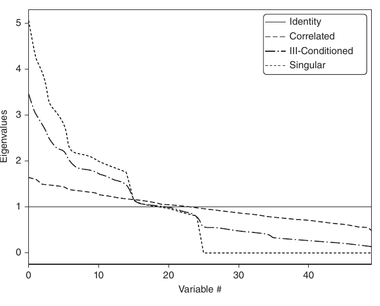
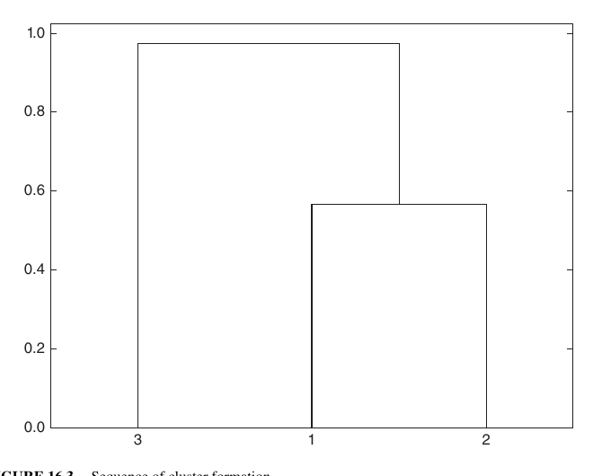
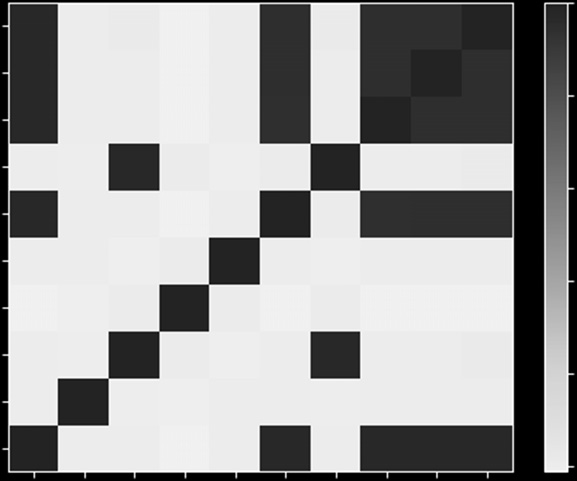
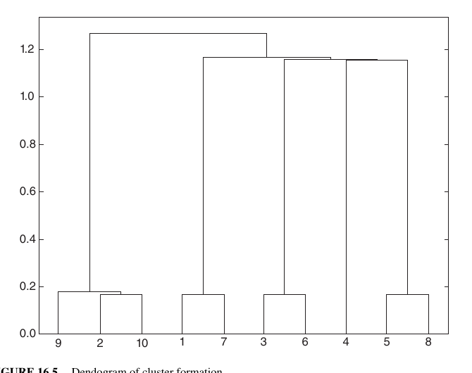
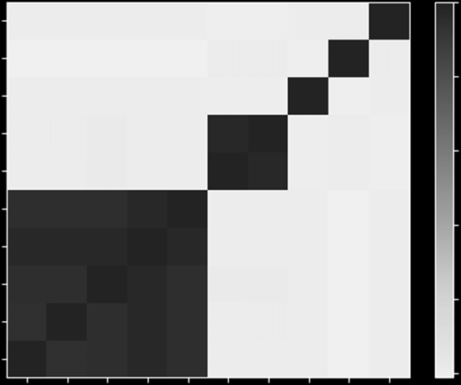
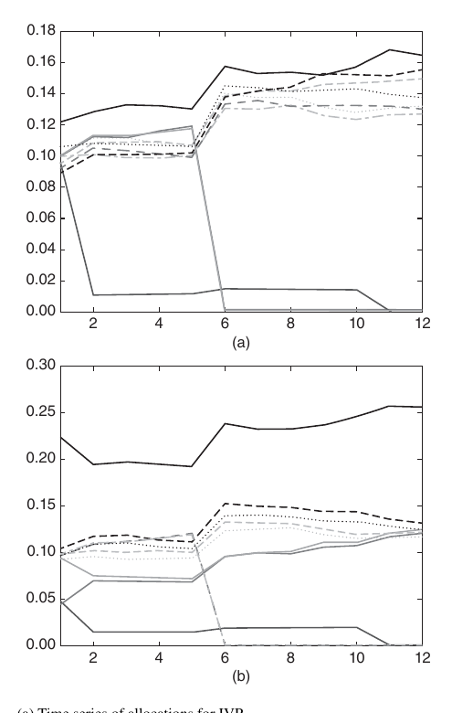
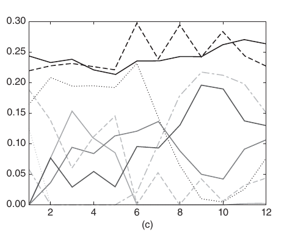
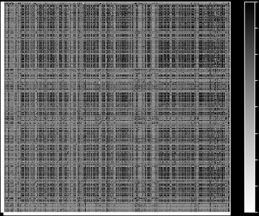
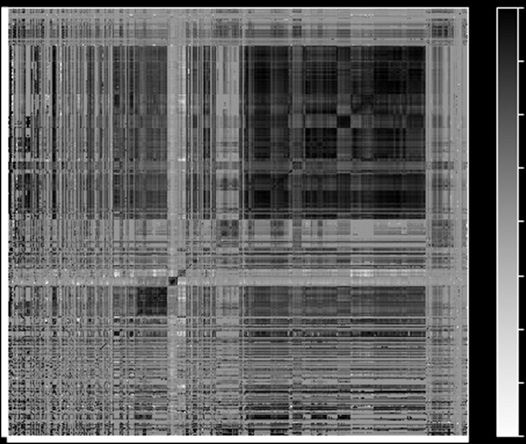

第三部分：回测
机器学习资产配置
16.1 动机
本章介绍分层风险平价（Hierarchical Risk Parity，HRP）方法。1HRP 组合着力解决二次优化器普遍存在、在马科维茨临界线算法（CLA）中尤其突出的三类问题：不稳定、持仓过度集中，以及样本外表现不佳。HRP 运用图论和机器学习等现代数学工具，根据协方差矩阵中的信息构建分散化组合。与二次优化器不同，HRP 不要求协方差矩阵可逆；即使矩阵严重退化甚至奇异，也能计算出组合，而二次优化器做不到这一点。蒙特卡洛实验表明，尽管最小化方差正是 CLA 的优化目标，HRP 的样本外方差仍然更低。与传统风险平价方法相比，HRP 得到的组合在样本外也更稳健。历史分析同样显示，HRP 的表现可能优于标准方法（Kolanovic 等人 [2017]、Raffinot [2017]）。HRP 的一个实际用途，是在多种机器学习（ML）策略之间分配资金。
16.2 凸优化在投资组合构建中的问题
构建投资组合也许是金融领域最常遇到的问题。投资经理每天都要把自己对风险和收益的判断、预测转化为持仓。六十多年前，24 岁的 Harry Markowitz 试图回答的正是这个根本问题。他最重要的洞见
是认识到：不同风险水平对应着不同的风险调整后收益最优组合，由此产生了“有效前沿”的概念（Markowitz [1952]）。这意味着，把全部资金投向预期收益最高的资产通常并非最优选择；构建分散化组合时，还要考虑不同投资之间的相关性。Markowitz 在 1954 年获得博士学位前离开学术界，加入兰德公司，并在那里开发出临界线算法（CLA）。CLA 是专门求解带不等式约束的投资组合问题的二次优化方法。它的突出之处在于：能保证在已知迭代次数后找到精确解，并巧妙地绕开 Karush-Kuhn-Tucker 条件（Kuhn 和 Tucker [1951]）。Bailey 和 López de Prado [2013]给出了该算法的说明和开源实现。令人意外的是，许多金融从业者至今似乎仍不了解 CLA，常常使用通用二次规划方法，而这些方法既不保证找到正确解，也不保证何时停止。Markowitz 理论虽然精彩，CLA 在实践中却有若干问题，导致解不够可靠。一个主要缺陷是：预期收益只要略有变化，CLA 就可能生成截然不同的组合（Michaud [1998]）。由于收益几乎不可能预测得足够准确，许多研究者干脆不再使用收益预测，只关注协方差矩阵。这催生了基于风险的资产配置方法，其中最知名的是“风险平价”（Jurczenko [2015]）。去掉收益预测虽然有所改善，却不能消除不稳定性。原因在于，二次规划需要对正定协方差矩阵求逆，也就是所有特征值都必须为正。当协方差矩阵的数值条件很差、条件数很高时，求逆会放大误差（Bailey 和 López de Prado [2012]）。
16.3 马科维茨诅咒
协方差矩阵、相关矩阵（或一般可对角化的正规矩阵）的条件数，是模最大的特征值与模最小的特征值之比的绝对值。图 16.1 展示了若干相关矩阵按大小排序后的特征值；每条曲线首尾两点之比就是条件数。对角相关矩阵的条件数最低，而且它就是自己的逆矩阵。随着更多相关、即存在多重共线性的投资加入，条件数不断增大。条件数高到一定程度后，数值误差会使逆矩阵极不稳定：任一元素的微小变化，都可能让逆矩阵面目全非。这就是“马科维茨诅咒”：投资之间越相关，越需要分散配置；但与此同时，优化解也越不稳定。分散化带来的好处常常会被估计误差抵消，甚至反超。
扩大协方差矩阵只会让问题更严重，因为每个协方差系数可用来估计的自由度更少。一般而言，至少需要 \(\frac{1}{2}N(N+1)\)个独立同分布（IID）观测，才能

对角相关矩阵的条件数最低。加入相关资产后，最大特征值上升、最小特征值下降，条件数会迅速增大，使相关矩阵的逆变得不稳定。最终，估计误差会超过分散化带来的收益。
估计出一个非奇异的 N 阶协方差矩阵。例如，要估计一个可逆的 50 阶协方差矩阵，至少需要 5 年的日频 IID 数据。投资者都知道，在如此长的时间里，相关结构不可能以合理的置信程度保持不变。问题的严重性可以从一个事实看出：即使是朴素的等权组合，样本外表现也被证明优于均值—方差优化和基于风险的优化方法（De Miguel 等人 [2009]）。
16.4 从几何关系转向层次关系
近年来，这些不稳定性问题受到广泛关注，Kolm 等人 [2014]对此做过系统梳理。多数替代方法通过增加约束（Clarke 等人 [2002]）、引入贝叶斯先验（Black 和 Litterman [1992]），或提高协方差矩阵求逆时的数值稳定性（Ledoit 和 Wolf [2003]）来增强稳健性。以上方法虽然大多近年才发表，根基却仍是很传统的数学领域：几何、线性代数和微积分。相关矩阵是线性代数对象，用来度量
收益率序列构成的向量空间中，任意两个向量夹角的余弦（见 Calkin 和 López de Prado [2014a, 2015b]）。二次优化器不稳定的一个原因，是它把向量空间建模为完全图，即每个节点都和其他节点相连，每项投资都被视为其他投资的潜在替代品。从算法角度说，矩阵求逆就是在整张完全图上评估偏相关。图 16.2(a) 展示了一个 50×50 协方差矩阵所隐含的关系：50 个节点、1225 条边。如此复杂的结构会放大细小的估计误差，进而给出错误解。直观上，我们应当删去不必要的边。想想这种拓扑结构在现实中的含义：投资者要在数百种股票、债券、对冲基金、房地产和私募资产之间构建分散化组合。有些投资彼此更像替代品，另一些则更具互补性。例如，股票可以按流动性、规模、行业和地区分组，同组股票争夺资金份额。在决定是否增减摩根大通这类美国大型上市金融股时，我们更可能拿它与高盛这类美国大型上市银行比较，而不是与瑞士的小型社区银行或加勒比地区的房地产项目比较。但在相关矩阵里，所有投资都可能彼此替代。换句话说，相关矩阵没有“层次”概念。缺少层次结构，会让权重以并非设计本意的方式自由摆动，这是 CLA 不稳定的根源之一。图 16.2(b) 展示了一种称为“树”的层次结构。树结构有两个理想特性：（1）连接 N 个节点只需 N−1 条边，权重只会在不同层级的同类对象之间重新分配；（2）权重自上而下分配，符合许多资产管理人的实际构建流程，例如先分资产类别，再分行业，最后分到具体证券。因此，层次结构不仅更稳定，结果也更直观。本章将用图论和机器学习这些现代数学方法，介绍一种克服 CLA 缺陷的组合构建方法：分层风险平价（HRP）。HRP 使用协方差矩阵的信息，却不需要矩阵可逆或正定；即使协方差矩阵奇异，也能计算组合。算法分为三个阶段：树聚类、准对角化和递归二分。
16.4.1 树聚类
考虑一个 \(T\times N\)观测矩阵 \(X\)，例如由 \(N\)个变量在 \(T\)个时期上的收益率序列构成。我们希望把这 \(N\)个列向量组织成层次化的簇，使资金能够沿树图自上而下分配。
第一步，计算 \(N\times N\)相关矩阵，其元素为 \(\rho=\{\rho_{i,j}\}_{i,j=1,\ldots,N}\)，其中 \(\rho_{i,j}=\rho[X_i,X_j]\)。定义距离度量 \(d:(X_i,X_j)\subset B\to\mathbb{R}\)如下：\(d_{i,j}=d[X_i,X_j]=\sqrt{\frac{1}{2}(1-\rho_{i,j})}\in[0,1]\)，其中 \(B\)表示 \(\{1,\ldots,i,\ldots,N\}\)中元素的笛卡儿积。由此可计算 \(N\times N\)距离矩阵 \(D=\{d_{i,j}\}_{i,j=1,\ldots,N}\)。矩阵 \(D\)构成严格的度量空间（证明见附录 16.A.1），因为它满足 \(d[x,y]\ge0\)非负性、\(d[x,y]=0\Leftrightarrow X=Y\)同一性、\(d[x,y]=d[Y,X]\)对称性，以及 \(d[X,Z]\le d[x,y]+d[Y,Z]\)次可加性。见示例 16.1。

相关矩阵可以表示成完全图，它不包含层次概念：每项投资都可被另一项替代。树结构则能表达层次关系。
示例 16.1 把相关矩阵 \(\rho\)编码为距离矩阵 \(D\)
第二步，对于矩阵 \(D\)，\(\tilde d:(D_i,D_j)\subset B\to\mathbb{R}\)表示其中任意两个列向量之间的欧氏距离，并满足 \(\tilde d_{i,j}\in[0,\sqrt{N}]\)：
注意距离度量 \(d_{i,j}\)与 \(\tilde d_{i,j}\)的区别。\(d_{i,j}\)定义在下列对象的列向量上，即 \(X\)，\(\tilde d_{i,j}\)定义在下列对象的列向量上，即 \(D\)，也就是“距离之间的距离”。因此，\(\tilde d\)是定义在整个度量空间 \(D\)上的距离，因为每个 \(\tilde d_{i,j}\)都由完整的相关矩阵决定，而不是只由某一对交叉相关系数决定。见示例 16.2。
示例 16.2 相关距离的欧氏距离
第三步，考察一对列 \((i^*,j^*)\)，如果 \((i^*,j^*)=\arg\min_{(i,j),\,i\ne j}\{\tilde d_{i,j}\}\)，就把它们聚为一簇，记为 \(u[1]\)。见示例 16.3。
示例 16.3 对元素进行聚类
第四步，需要定义新簇 \(u[1]\)与尚未聚类的单个元素之间的距离，以便更新 \(\{\tilde d_{i,j}\}\)。在层次聚类中，这叫作连接准则。例如，可以把元素 \(i\) （位于距离矩阵 \(\tilde d\)）到新簇 \(u[1]\)的距离定义如下：\(\dot d_{i,u[1]}=\min[\{\tilde d_{i,j}\}_{j\in u[1]}]\)，即最近点算法。见示例 16.4。
示例 16.4 更新矩阵 \(\{\tilde d_{i,j}\}\)：加入新簇 \(u\)
第五步，更新矩阵 \(\{\tilde d_{i,j}\}\)：追加 \(\dot d_{i,u[1]}\)，并删除已经聚类的行和列 \(j\in u[1]\)。见示例 16.5。
示例 16.5 更新矩阵 \(\{\tilde d_{i,j}\}\)：加入新簇 \(u\)
第六步，递归执行第 3、4、5 步，可以把 \(N-1\)个这样的簇追加到矩阵 \(D\)；当最终簇包含所有原始元素时，聚类算法停止。见示例 16.6。
示例 16.6 递归寻找剩余簇
图 16.3 展示了本例每轮形成的簇，以及 \(\tilde d_{i^*,j^*}\)触发各次聚合的距离（第三步）。这一过程可以使用多种距离度量 \(d_{i,j}\)，\(\tilde d_{i,j}\)与 \(\dot d_{i,u}\)，不限于本章演示的形式。其他度量可参见 Rokach 和 Maimon [2005]，也可参见 Brualdi [2010]对 Fiedler 向量和 Stewart 谱聚类方法的讨论，以及 SciPy 库中的算法。2代码清单 16.1 演示了如何使用 SciPy 进行树聚类。

这是根据数值示例得到的树结构，以树状图呈现。纵轴表示两条合并分支之间的距离。
import scipy.cluster.hierarchy as sch
import numpy as np
import pandas as pd
cov,corr=x.cov(),x.corr()
dist=((1-corr)/2.)**.5 # distance matrix
link=sch.linkage(dist,'single') # linkage matrix这一阶段可以定义一个 \((N-1)\times4\)阶连接矩阵，其结构为 \(Y=\{(y_{m,1},y_{m,2},y_{m,3},y_{m,4})\}_{m=1,\ldots,N-1}\)，即每个簇对应一个四元组。元素 \((y_{m,1},y_{m,2})\)给出簇的组成；元素 \(y_{m,3}\)给出 \(y_{m,1}\)与 \(y_{m,2}\)之间的距离，即 \(y_{m,3}=\tilde d_{y_{m,1},y_{m,2}}\)。元素 \(y_{m,4}\le N\)给出相应簇所含的原始元素个数，簇编号为 \(m\)。
16.4.2 准对角化
这一阶段重新排列协方差矩阵的行和列，让较大的数值尽量靠近主对角线。协方差矩阵经过这种准对角化后，无须更换基底，就会呈现一个很有用的性质：相似的投资排在一起，不相似的投资相距较远（示例见图 16.5 和图 16.6）。算法如下：连接矩阵的每一行都会把两个分支合成一个。我们在 \((y_{N-1,1},y_{N-1,2})\)中递归地用簇的组成元素替换该簇，直到不再剩下任何簇。替换过程保留聚类次序，最终输出排好序的原始元素列表。代码清单 16.2 实现了这一逻辑。
def getQuasiDiag(link):
# Sort clustered items by distance
link=link.astype(int)
sortIx=pd.Series([link[-1,0],link[-1,1]])
numItems=link[-1,3] # number of original items
while sortIx.max()>=numItems:
sortIx.index=range(0,sortIx.shape[0]*2,2) # make space
df0=sortIx[sortIx>=numItems] # find clusters
i=df0.index
j=df0.values-numItems
sortIx[i]=link[j,0] # item 1
df0=pd.Series(link[j,1],index=i+1)
sortIx=sortIx.append(df0) # item 2
sortIx=sortIx.sort_index() # re-sort
sortIx.index=range(sortIx.shape[0]) # re-index
return sortIx.tolist()16.4.3 递归二分
阶段 2 已得到准对角矩阵。对于对角协方差矩阵，逆方差配置是最优的，证明见附录 16.A.2。我们可以从两个方向利用这一点：（1）自下而上，把某个连续子集的方差定义为其逆方差组合的方差；（2）自上而下，按相邻子集聚合方差的倒数比例分配权重。下面的算法把这一思路形式化。
- 算法初始化如下：
- 建立元素列表：\(L=\{L_0\}\)，其中 \(L_0=\{n\}_{n=1,\ldots,N}\)。
- 为所有元素赋予单位权重：\(w_n=1,\ \forall n=1,\ldots,N\)。
- 如果 \(|L_i|=1,\ \forall L_i\in L\)，则停止。
- 对每个 \(L_i\in L\)，如果 \(|L_i|>1\)：
- 执行二分：把 \(L_i\)分成两个子集 \(L_i^{(1)}\cup L_i^{(2)}=L_i\)，其中 \(|L_i^{(1)}|=\operatorname{int}\left[\frac{1}{2}|L_i|\right]\)，并保持原有顺序。
- 把 \(L_i^{(j)}\)，\(j=1,2\)的方差定义为二次型 \(\tilde V_i^{(j)}\equiv \tilde w_i^{(j)\prime}V_i^{(j)}\tilde w_i^{(j)}\)，其中 \(V_i^{(j)}\)是二分子集 \(L_i^{(j)}\)各组成元素之间的协方差矩阵；对应的逆方差权重为 \(\tilde w_i^{(j)}=\frac{\operatorname{diag}[V_i^{(j)}]^{-1}}{\operatorname{tr}[\operatorname{diag}[V_i^{(j)}]^{-1}]}\)，其中 \(\operatorname{diag}[\cdot]\)与 \(\operatorname{tr}[\cdot]\)分别表示取对角线和求迹运算。
- 计算分配系数：\(\alpha_i=1-\frac{\tilde V_i^{(1)}}{\tilde V_i^{(1)}+\tilde V_i^{(2)}}\)，使得 \(0\le\alpha_i\le1\)。
- 把配置权重 \(w_n\)乘以下列缩放系数：\(\alpha_i\)，\(\forall n\in L_i^{(1)}\)。
- 把配置权重 \(w_n\)乘以下列缩放系数：\(1-\alpha_i\)，\(\forall n\in L_i^{(2)}\)。
- 回到第 2 步循环。
步骤 3b 自下而上利用准对角化结果：它定义分区 \(L_i^{(j)}\)的方差，所用逆方差权重为 \(\tilde w_i^{(j)}\)。步骤 3c 则自上而下利用准对角化结果，按簇方差的倒数比例拆分权重。该算法保证 \(0\le w_i\le1,\ \forall i=1,\ldots,N\)，并且 \(\sum_{i=1}^{N}w_i=1\)；原因是每轮迭代都只拆分从更高层继承下来的权重。在这一阶段很容易加入约束：只需根据使用者的偏好替换步骤 3c、3d 和 3e 中的方程。阶段 3 的实现见代码清单 16.3。
def getRecBipart(cov,sortIx):
# Compute HRP alloc
w=pd.Series(1,index=sortIx)
cItems=[sortIx] # initialize all items in one cluster
while len(cItems)>0:
cItems=[i[j:k] for i in cItems for j,k in ((0,len(i)/2),\
(len(i)/2,len(i))) if len(i)>1] # bi-section
for i in xrange(0,len(cItems),2):
# parse in pairs
cItems0=cItems[i] # cluster 1
cItems1=cItems[i+1] # cluster 2
cVar0=getClusterVar(cov,cItems0)
cVar1=getClusterVar(cov,cItems1)
alpha=1-cVar0/(cVar0+cVar1)
w[cItems0]*=alpha # weight 1
w[cItems1]*=1-alpha # weight 2
return w至此，HRP 算法的基本说明已经完成。它求解配置问题时，最好情形下具有确定性的对数时间复杂度 \(T(n)=\mathcal{O}(\log_2[n])\)，最坏情形下具有确定性的线性时间复杂度 \(T(n)=\mathcal{O}(n)\)。接下来将把这些方法用于实践，并评估其样本外准确性。
16.5 数值示例
首先模拟一个观测矩阵 \(X\)，其维度为 \(10000\times10\)。图 16.4 用热力图展示相关矩阵；图 16.5 展示阶段 1 得到的簇的树状图；图 16.6 则按照识别出的簇重新排列同一相关矩阵，使其呈块状，也就是阶段 2。附录 16.A.3 给出了生成本数值示例的代码。我们在这组随机数据上计算 HRP 的配置权重（阶段 3），并与两种方法比较：（1）以 CLA 的最小方差组合代表二次优化；它是有效前沿上唯一不依赖平均收益的组合；（2）以逆方差组合（IVP）代表传统风险平价。CLA 的完整实现见 Bailey 和 López de Prado [2013]，IVP 的推导见附录 16.A.2。

该相关矩阵由代码清单 16.4（见第 16.A.3 节）中的 generateData 函数生成。最后 5 列与前 5 个序列中的一部分存在相关性。

聚类过程正确识别出序列 9 和 10 是序列 2 的扰动版本，因此把 9、2、10 聚在一起。类似地，7 是 1 的扰动，6 是 3 的扰动，8 是 5 的扰动。唯一未受扰动的原始序列是 4，聚类算法也确实没有找到与它相似的序列。
我们采用标准约束 \(0\le w_i\le1\)非负性、\(\forall i=1,\ldots,N\)，并且 \(\sum_{i=1}^{N}w_i=1\)，即资金全部投入。顺便说一下，本例协方差矩阵的条件数只有 150.9324，并不算高，因此没有特别不利于 CLA。
从表 16.1 的配置可以看到几个典型特征。第一，CLA 把 92.66% 的资金集中在前 5 大持仓，而 HRP 只有 62.57%。第二，CLA 给 3 项投资分配了零权重；如果不施加 \(0\le w_i\)约束，这些权重会为负。第三，HRP 似乎在 CLA 的集中配置与传统风险平价的 IVP 配置之间找到了折中。读者可以使用附录 16.A.3 的代码验证：换用其他随机协方差矩阵时，这些结论通常仍然成立。
CLA 之所以极度集中，是因为它以最小化组合风险为目标。然而两个组合的标准差非常接近（\(\sigma_{\mathrm{HRP}}=0.4640\)，\(\sigma_{\mathrm{CLA}}=0.4486\)）。也就是说，CLA 为了很小的风险降幅，舍弃了一半投资范围。事实上，CLA 的组合只是表面上分散：一旦前 5 大持仓受到冲击，CLA 组合遭受的负面影响会远大于 HRP 组合。

阶段 2 对相关矩阵做准对角化，使较大的数值集中在主对角线附近。但与 PCA 等方法不同，HRP 不需要更换基底；它直接在原始投资上稳健地求解配置问题。
| 权重编号 | CLA | HRP | IVP |
|---|---|---|---|
| 1 | 14.44% | 7.00% | 10.36% |
| 2 | 19.93% | 7.59% | 10.28% |
| 3 | 19.73% | 10.84% | 10.36% |
| 4 | 19.87% | 19.03% | 10.25% |
| 5 | 18.68% | 9.72% | 10.31% |
| 6 | 0.00% | 10.19% | 9.74% |
| 7 | 5.86% | 6.62% | 9.80% |
| 8 | 1.49% | 9.10% | 9.65% |
| 9 | 0.00% | 7.12% | 9.64% |
| 10 | 0.00% | 12.79% | 9.61% |
三种方法会产生很有代表性的结果：CLA 把权重集中在少数投资上，因此容易受到个别资产冲击；IVP 把权重平均分散到所有投资，却忽略相关结构，因而容易受到系统性冲击。HRP 在“分散到所有投资”和“分散到各个簇”之间折中，因此对这两类冲击都更有韧性。
16.6 样本外蒙特卡洛模拟
在数值示例的样本内，CLA 组合的风险低于 HRP。但样本内方差最小的组合，样本外未必仍然方差最小。我们当然可以轻易挑选一段让 HRP 胜过 CLA 和 IVP 的历史数据（见 Bailey 和 López de Prado [2014]，并回顾第 11 章对选择偏差的讨论）。本节不采用这种做法，而是遵循第 13 章介绍的回测范式，通过蒙特卡洛模拟比较 HRP、CLA 最小方差组合与传统风险平价 IVP 的样本外表现。这样也能帮助我们理解：不依赖个别反例时，哪些特征会让一种方法更可取。
第一步，生成 10 条随机高斯收益率序列，每条 520 个观测，相当于两年的日频历史；均值为 0，任意设定的标准差为 10%。真实价格会频繁跳跃（Merton [1976]），不同资产的收益在横截面上也并非独立，所以还要给模拟数据加入随机冲击和随机相关结构。第二步，使用过去 260 个观测，也就是一年日频历史，计算 HRP、CLA 和 IVP 组合；每经过 22 个观测重新估计并再平衡一次，相当于月度频率。第三步，计算三个组合对应的样本外收益。整个过程重复 10,000 次。
正如预期，三个组合的样本外平均收益都基本为 0。关键差别在样本外组合收益的方差：\(\sigma_{\mathrm{CLA}}^2=0.1157\)，\(\sigma_{\mathrm{IVP}}^2=0.0928\)，并且 \(\sigma_{\mathrm{HRP}}^2=0.0671\)。CLA 的目标明明是得到最低方差，这正是其优化目标函数，但它的样本外方差反而最高，比 HRP 高 72.47%。这一实验结果与 De Miguel 等人 [2009]的历史证据一致。换言之，相比 CLA，HRP 能把样本外夏普比率提高约 31.3%，增幅相当可观。IVP 假设协方差矩阵为对角矩阵，因此稳定性有所改善，但其方差仍比 HRP 高 38.24%。风险平价投资者往往使用较高杠杆，所以降低样本外方差对他们尤其重要。关于样本内与样本外表现的更广泛讨论，参见 Bailey 等人 [2014]。
严格证明 HRP 为何优于 Markowitz 的 CLA 和传统风险平价 IVP 较为复杂，超出本章范围。直观上可以这样理解前面的实证结果：单项投资受到冲击时，CLA 的集中持仓会受罚；多项相关投资共同受冲击时，IVP 忽视相关结构会受罚。HRP 在“覆盖所有投资”和“覆盖多个层级的投资簇”之间取得折中，因此对共同冲击和个别冲击都能提供更好的保护。图 16.7 展示 10,000 次模拟中第一次运行的权重时间序列。
附录 16.A.4 给出了实现上述研究的 Python 代码。读者可以尝试不同参数设置，并得到相近结论。尤其是，在下列情况下，HRP 的样本外优势会更加


（a）IVP。第一次与第二次再平衡之间，一项投资受到个别冲击，方差上升。IVP 会降低这项投资的权重，并把腾出的敞口分给其他所有投资。第五次与第六次再平衡之间，两项投资受到共同冲击，IVP 的反应仍然相同。结果是，七项未受影响投资的权重随时间增加，而不考虑它们彼此是否相关。
（b）HRP。面对个别冲击，HRP 会降低受影响投资的权重，并把减掉的部分加到与之相关但未受影响的投资上。面对共同冲击，HRP 会降低受影响投资的权重，并增加不相关且方差更低的投资权重。
（c）CLA。无论面对个别冲击还是共同冲击，CLA 的权重都会剧烈而无规律地变化。如果计入再平衡成本，其表现会非常差。
明显：投资范围更大、冲击更多、相关结构更强，或把再平衡成本计入时。CLA 每次再平衡都会产生交易成本，长期累积后可能造成难以承受的损失。
16.7 进一步研究
本章方法灵活、可扩展，同一思路可以有多种变体。读者可以利用所给代码，研究并评估哪种 HRP 设置最适合自己的问题。例如，在阶段 1 可以改用其他 \(d_{i,j}\)，\(\tilde d_{i,j}\)与 \(\dot d_{i,u}\)定义，或使用双聚类等不同聚类算法；在阶段 3，可以改用不同的 \(\tilde w_m\)与 \(\alpha\)函数或配置约束。阶段 3 也不一定要递归二分，还可以直接使用阶段 1 得到的簇，自上而下拆分权重。
在这一分层框架中加入预期收益、Ledoit-Wolf 收缩估计和 Black-Litterman 式观点并不困难。细心的读者可能已经发现，HRP 的核心其实是一套稳健地避开矩阵求逆的流程。因此，支撑 HRP 的思路也可用来替代许多输出不稳定的计量回归方法，如 VAR 和 VECM。图 16.8 展示一个包含 210 多万个元素的大型固定收益证券相关矩阵：（a）聚类前；（b）聚类后。传统优化或计量方法无法识别金融大数据的层次结构，数值不稳定性会吞噬分析收益，最终产生不可靠甚至有害的结果。


本章方法不限于优化问题。例如，对大型固定收益资产范围做 PCA，也会遇到我们为 CLA 描述的同类问题。几十年乃至几百年前发展起来的小数据技术，如因子模型、回归分析和计量经济学，无法识别金融大数据的层次性。
Kolanovic 等人 [2017]对 HRP 做了详尽研究，结论是：HRP 能取得更好的风险调整后收益。HRP 与均值—方差（MV）组合的收益都较高，但 HRP 对波动率目标的跟踪明显优于 MV。模拟研究也证实了结论的稳健性：HRP 始终优于 MV 和其他风险型策略。HRP 组合实现了真正的分散化，拥有更多互不相关的风险敞口，权重和风险配置也不那么极端。
Raffinot [2017]的结论是：实证结果表明，基于层次聚类的组合既稳健又真正分散，其风险调整后表现也在统计意义上优于常用的投资组合优化技术。
16.8 结论
精确的解析解可能远不如近似的机器学习解。二次优化器在数学上虽然正确，但一般而言，其解并不可靠；Markowitz 的 CLA 尤其如此，常见问题包括不稳定、持仓集中和表现不佳。问题根源在于，二次优化器必须对协方差矩阵求逆。“马科维茨诅咒”指的是：投资之间越相关，越需要分散化组合，但组合的估计误差也越大。
本章指出了二次优化器不稳定的一个主要来源：一个 \(N\)阶矩阵对应一张完全图，其中有 \(\frac{1}{2}N(N-1)\)条边。节点之间的边如此之多，权重可以毫无限制地重新调整。缺少层次结构意味着，微小的估计误差就会导向完全不同的解。HRP 用树结构替代协方差结构，实现三个目标：（1）与传统风险平价不同，它充分利用协方差矩阵中的信息；（2）恢复权重稳定性；（3）解在构造上就直观易懂。算法在最好情形下以确定性的对数时间收敛，在最坏情形下以确定性的线性时间收敛。
HRP 稳健、直观可视且灵活，使用者可以加入约束或调整树结构，而不会破坏算法的搜索过程。这些优点来自 HRP 不要求协方差矩阵可逆。事实上，即使矩阵严重退化甚至奇异，HRP 仍能计算组合。
本章主要讨论投资组合构建，但当协方差矩阵接近奇异时，这套方法还可用于许多不确定条件下的决策：向不同投资组合经理配置资本、在算法策略之间分配资金、对机器学习信号做装袋和提升、汇总随机森林预测，以及替代不稳定的 VAR、VECM 等计量模型。
CLA 等二次优化器当然能在样本内得到最小方差组合，因为这就是其目标函数。蒙特卡洛实验却表明，HRP 的样本外方差低于 CLA 和传统风险平价方法 IVP。Bridgewater 在 20 世纪 90 年代率先采用风险平价后，多家大型资产管理公司推出了这类基金，合计管理资产超过 5,000 亿美元。这些基金广泛使用杠杆，如果改用更稳定的风险平价配置方法，应能获得更高的风险调整后收益和更低的再平衡成本。
附录
16.A.1 基于相关性的度量
考虑两个实值向量 \(X,Y\)，其长度为 \(T\)，以及相关性变量 \(\rho[x,y]\)；唯一要求是 \(\sigma[x,y]=\rho[x,y]\sigma[X]\sigma[Y]\)，其中 \(\sigma[x,y]\)为两个向量之间的协方差，\(\sigma[\cdot]\)为标准差。注意，满足这些要求的相关系数并不只有 Pearson 相关系数。
下面证明 \(d[x,y]=\sqrt{\frac{1}{2}(1-\rho[x,y])}\)是严格的度量。第一，两个向量之间的欧氏距离为 \(d_E[X,Y]=\sqrt{\sum_{t=1}^{T}(X_t-Y_t)^2}\)。第二，把这两个向量做 z 标准化：
因此，\(0\le\rho[x,y]=\rho[X,Y]\)。第三，\(d_E[x,y]\)的距离定义如下：
换言之，距离 \(d[x,y]\)是 z 标准化后向量 \(\{X,Y\}\)之间欧氏距离的线性倍数，所以继承了欧氏距离作为严格度量的全部性质。
类似地，可以证明 \(d[x,y]=\sqrt{1-|\rho[x,y]|}\)在 \(\mathbb{Z}/2\mathbb{Z}\)商空间上也诱导出严格度量。为此，重新定义 \(y=\frac{Y-\bar Y}{\sigma[Y]}\operatorname{sgn}[\rho[x,y]]\)，其中 \(\operatorname{sgn}[\cdot]\)是符号运算符，因此 \(0\le\rho[x,y]=|\rho[x,y]|\)。于是，
16.A.2 逆方差配置
阶段 3（见第 16.4.3 节）按子集方差的倒数比例拆分权重。下面证明，当协方差矩阵为对角矩阵时，这种配置是最优的。考虑如下标准二次优化问题，其维度为 \(N\)，
其解为 \(\omega=\frac{V^{-1}a}{a^\prime V^{-1}a}\)。当 \(a=\mathbf{1}_N\)为全 1 向量时，该解就是最小方差组合。如果 \(V\)为对角矩阵，则
当 \(N=2\)，
这正是阶段 3 在某个子集的两个二分部分之间拆分权重的方式。
16.A.3 重现数值示例
代码清单 16.4 可以重现本章结果，也可用来模拟更多数值示例。generateData 函数生成一个时间序列矩阵，其中 size0 个向量彼此不相关，size1 个向量彼此相关。读者可以修改 generateData 中的 np.random.seed，运行不同示例，直观理解 HRP 的工作方式。SciPy 的 linkage 函数执行阶段 1（第 16.4.1 节），getQuasiDiag 函数执行阶段 2（第 16.4.2 节），getRecBipart 函数执行阶段 3（第 16.4.3 节）。
import matplotlib.pyplot as mpl
import scipy.cluster.hierarchy as sch,random,numpy as np,pandas as pd
#---------------------------------------
def getIVP(cov,**kargs):
# Compute the inverse-variance portfolio
ivp=1./np.diag(cov)
ivp/=ivp.sum()
return ivp
#---------------------------------------
def getClusterVar(cov,cItems):
# Compute variance per cluster
cov_=cov.loc[cItems,cItems] # matrix slice
w_=getIVP(cov_).reshape(-1,1)
cVar=np.dot(np.dot(w_.T,cov_),w_)[0,0]
return cVar
#---------------------------------------
def getQuasiDiag(link):
# Sort clustered items by distance
link=link.astype(int)
sortIx=pd.Series([link[-1,0],link[-1,1]])
numItems=link[-1,3] # number of original items
while sortIx.max()>=numItems:
sortIx.index=range(0,sortIx.shape[0]*2,2) # make space
df0=sortIx[sortIx>=numItems] # find clusters
i=df0.index;j=df0.values-numItems
sortIx[i]=link[j,0] # item 1
df0=pd.Series(link[j,1],index=i+1)
sortIx=sortIx.append(df0) # item 2
sortIx=sortIx.sort_index() # re-sort
sortIx.index=range(sortIx.shape[0]) # re-index
return sortIx.tolist()
#---------------------------------------
def getRecBipart(cov,sortIx):
# Compute HRP alloc
w=pd.Series(1,index=sortIx)
cItems=[sortIx] # initialize all items in one cluster
while len(cItems)>0:
cItems=[i[j:k] for i in cItems for j,k in ((0,len(i)/2), \
(len(i)/2,len(i))) if len(i)>1] # bi-section
for i in xrange(0,len(cItems),2): # parse in pairs
cItems0=cItems[i] # cluster 1
cItems1=cItems[i+1] # cluster 2
cVar0=getClusterVar(cov,cItems0)
cVar1=getClusterVar(cov,cItems1)
alpha=1-cVar0/(cVar0+cVar1)
w[cItems0]*=alpha # weight 1
w[cItems1]*=1-alpha # weight 2
return w
#---------------------------------------
def correlDist(corr):
# A distance matrix based on correlation, where 0<=d[i,j]<=1
# This is a proper distance metric
dist=((1-corr)/2.)**.5 # distance matrix
return dist
#---------------------------------------
def plotCorrMatrix(path,corr,labels=None):
# Heatmap of the correlation matrix
if labels is None:labels=[]
mpl.pcolor(corr)
mpl.colorbar()
mpl.yticks(np.arange(.5,corr.shape[0]+.5),labels)
mpl.xticks(np.arange(.5,corr.shape[0]+.5),labels)
mpl.savefig(path)
mpl.clf();mpl.close() # reset pylab
return
#---------------------------------------
def generateData(nObs,size0,size1,sigma1):
# Time series of correlated variables
#1) generating some uncorrelated data
np.random.seed(seed=12345);random.seed(12345)
x=np.random.normal(0,1,size=(nObs,size0)) # each row is a variable
#2) creating correlation between the variables
cols=[random.randint(0,size0-1) for i in xrange(size1)]
y=x[:,cols]+np.random.normal(0,sigma1,size=(nObs,len(cols)))
x=np.append(x,y,axis=1)
x=pd.DataFrame(x,columns=range(1,x.shape[1]+1))
return x,cols
#---------------------------------------
def main():
#1) Generate correlated data
nObs,size0,size1,sigma1=10000,5,5,.25
x,cols=generateData(nObs,size0,size1,sigma1)
print [(j+1,size0+i) for i,j in enumerate(cols,1)]
cov,corr=x.cov(),x.corr()
#2) compute and plot correl matrix
plotCorrMatrix('HRP3_corr0.png',corr,labels=corr.columns)
#3) cluster
dist=correlDist(corr)
link=sch.linkage(dist,'single')
sortIx=getQuasiDiag(link)
sortIx=corr.index[sortIx].tolist() # recover labels
df0=corr.loc[sortIx,sortIx] # reorder
plotCorrMatrix('HRP3_corr1.png',df0,labels=df0.columns)
#4) Capital allocation
hrp=getRecBipart(cov,sortIx)
print hrp
return
#---------------------------------------
if __name__=='__main__':main()16.A.4 重现蒙特卡洛实验
代码清单 16.5 对 HRP、CLA 和 IVP 三种配置方法进行蒙特卡洛实验。除 HRP 与 CLA 外，所用程序库都是标准库；HRP 的实现见附录 16.A.3，CLA 的实现见 Bailey 和 López de Prado [2013]。子程序 generateData 模拟相关数据，并加入两类随机冲击：同时影响多项投资的共同冲击，以及只影响单项投资的特定冲击。每类冲击各有两次，一正一负。实验变量作为 hrpMC 的参数设置。这些参数是任意选取的，使用者可以尝试其他组合。
import scipy.cluster.hierarchy as sch,random,numpy as np,pandas as pd,CLA
from HRP import correlDist,getIVP,getQuasiDiag,getRecBipart
#---------------------------------------
def generateData(nObs,sLength,size0,size1,mu0,sigma0,sigma1F):
# Time series of correlated variables
#1) generate random uncorrelated data
x=np.random.normal(mu0,sigma0,size=(nObs,size0))
#2) create correlation between the variables
cols=[random.randint(0,size0-1) for i in xrange(size1)]
y=x[:,cols]+np.random.normal(0,sigma0*sigma1F,size=(nObs,len(cols)))
x=np.append(x,y,axis=1)
#3) add common random shock
point=np.random.randint(sLength,nObs-1,size=2)
x[np.ix_(point,[cols[0],size0])]=np.array([[-.5,-.5],[2,2]])
#4) add specific random shock
point=np.random.randint(sLength,nObs-1,size=2)
x[point,cols[-1]]=np.array([-.5,2])
return x,cols
#---------------------------------------
def getHRP(cov,corr):
# Construct a hierarchical portfolio
corr,cov=pd.DataFrame(corr),pd.DataFrame(cov)
dist=correlDist(corr)
link=sch.linkage(dist,'single')
sortIx=getQuasiDiag(link)
sortIx=corr.index[sortIx].tolist() # recover labels
hrp=getRecBipart(cov,sortIx)
return hrp.sort_index()
#---------------------------------------
def getCLA(cov,**kargs):
# Compute CLA's minimum variance portfolio
mean=np.arange(cov.shape[0]).reshape(-1,1) # Not used by C portf
lB=np.zeros(mean.shape)
uB=np.ones(mean.shape)
cla=CLA.CLA(mean,cov,lB,uB)
cla.solve()
return cla.w[-1].flatten()
#---------------------------------------
def hrpMC(numIters=1e4,nObs=520,size0=5,size1=5,mu0=0,sigma0=1e-2, \
sigma1F=.25,sLength=260,rebal=22):
# Monte Carlo experiment on HRP
methods=[getIVP,getHRP,getCLA]
stats,numIter={i.__name__:pd.Series() for i in methods},0
pointers=range(sLength,nObs,rebal)
while numIter<numIters:
print numIter
#1) Prepare data for one experiment
x,cols=generateData(nObs,sLength,size0,size1,mu0,sigma0,sigma1F)
r={i.__name__:pd.Series() for i in methods}
#2) Compute portfolios in-sample
for pointer in pointers:
x_=x[pointer-sLength:pointer]
cov_,corr_=np.cov(x_,rowvar=0),np.corrcoef(x_,rowvar=0)
#3) Compute performance out-of-sample
x_=x[pointer:pointer+rebal]
for func in methods:
w_=func(cov=cov_,corr=corr_) # callback
r_=pd.Series(np.dot(x_,w_))
r[func.__name__]=r[func.__name__].append(r_)
#4) Evaluate and store results
for func in methods:
r_=r[func.__name__].reset_index(drop=True)
p_=(1+r_).cumprod()
stats[func.__name__].loc[numIter]=p_.iloc[-1]-1
numIter+=1
#5) Report results
stats=pd.DataFrame.from_dict(stats,orient='columns')
stats.to_csv('stats.csv')
df0,df1=stats.std(),stats.var()
print pd.concat([df0,df1,df1/df1['getHRP']-1],axis=1)
return
#---------------------------------------
if __name__=='__main__':hrpMC()脚注
- 本章的简版曾发表于 2016 年夏季的《Journal of Portfolio Management》，第 42 卷第 4 期，第 59—69 页。 返回正文
- 更多距离度量参见：http://docs.scipy.org/doc/scipy/reference/generated/scipy.spatial.distance.pdist.html http://docs.scipy.org/doc/scipy-0.16.0/reference/generated/scipy.cluster.hierarchy.linkage.html。 返回正文
参考文献
- Bailey, D. and M. López de Prado (2012): “Balanced baskets: A new approach to trading and hedging risks.” Journal of Investment Strategies, Vol. 1, No. 4, pp. 21–62. Available at http://ssrn.com/abstract=2066170.
- Bailey, D. and M. López de Prado (2013): “An open-source implementation of the critical-line algorithm for portfolio optimization.” Algorithms, Vol. 6, No. 1, pp. 169–196. Available at http://ssrn.com/abstract=2197616.
- Bailey, D., J. Borwein, M. López de Prado, and J. Zhu (2014) “Pseudo-mathematics and financial charlatanism: The effects of backtest overfitting on out-of-sample performance.” Notices of the American Mathematical Society, Vol. 61, No. 5, pp. 458–471. Available at http://ssrn.com/abstract=2308659.
- Bailey, D. and M. López de Prado (2014): “The deflated Sharpe ratio: Correcting for selection bias, backtest overfitting and non-normality.” Journal of Portfolio Management, Vol. 40, No. 5, pp. 94–107.
- Black, F. and R. Litterman (1992): “Global portfolio optimization.” Financial Analysts Journal, Vol. 48, pp. 28–43.
- Brualdi, R. (2010): “The mutually beneficial relationship of graphs and matrices.” Conference Board of the Mathematical Sciences, Regional Conference Series in Mathematics, Nr. 115.
- Calkin, N. and M. López de Prado (2014): “Stochastic flow diagrams.” Algorithmic Finance, Vol. 3, No. 1, pp. 21–42. Availble at http://ssrn.com/abstract=2379314.
- Calkin, N. and M. López de Prado (2014): “The topology of macro financial flows: An application of stochastic flow diagrams.” Algorithmic Finance, Vol. 3, No. 1, pp. 43–85. Available at http://ssrn.com/abstract=2379319.
- Clarke, R., H. De Silva, and S. Thorley (2002): “Portfolio constraints and the fundamental law of active management.” Financial Analysts Journal, Vol. 58, pp. 48–66.
- De Miguel, V., L. Garlappi, and R. Uppal (2009): “Optimal versus naive diversification: How inefficient is the 1/N portfolio strategy?” Review of Financial Studies, Vol. 22, pp. 1915–1953.
- Jurczenko, E. (2015): Risk-Based and Factor Investing, 1st ed. Elsevier Science.
- Kolanovic, M., A. Lau, T. Lee, and R. Krishnamachari (2017): “Cross asset portfolios of tradable risk premia indices. Hierarchical risk parity: Enhancing returns at target volatility.” White paper, Global Quantitative & Derivatives Strategy. J.P. Morgan, April 26.
- Kolm, P., R. Tutuncu and F. Fabozzi (2014): “60 years of portfolio optimization.” European Journal of Operational Research, Vol. 234, No. 2, pp. 356–371.
- Kuhn, H. W. and A. W. Tucker (1951): “Nonlinear programming.” Proceedings of 2nd Berkeley Symposium. Berkeley, University of California Press, pp. 481–492.
- Markowitz, H. (1952): “Portfolio selection.” Journal of Finance, Vol. 7, pp. 77–91.
- Merton, R. (1976): “Option pricing when underlying stock returns are discontinuous.” Journal of Financial Economics, Vol. 3, pp. 125–144.
- Michaud, R. (1998): Efficient Asset Allocation: A Practical Guide to Stock Portfolio Optimization and Asset Allocation, 1st ed. Harvard Business School Press.
- Ledoit, O. and M. Wolf (2003): “Improved estimation of the covariance matrix of stock returns with an application to portfolio selection.” Journal of Empirical Finance, Vol. 10, No. 5, pp. 603–621.
- Raffinot, T. (2017): “Hierarchical clustering based asset allocation.” Journal of Portfolio Management, forthcoming.
- Rokach, L. and O. Maimon (2005): “Clustering methods,” in Rokach, L. and O. Maimon, eds., Data Mining and Knowledge Discovery Handbook. Springer, pp. 321–352.